Relational Database Design Theory¶
Learning Goals
- Understanding the concepts of functional dependencies and normal forms
- Describe the quality of a design by using normal forms
- Improving a database design by decomposition
Functional Dependencies¶
Symbols:
- Schema \mathcal R = \{A,B,C,D\}
- Instance R
- Let \alpha \subseteq \mathcal R and \beta \subseteq \mathcal R be sets of attributes
A functional dependency \alpha \to \beta holds on \mathcal R if for all legal instances R of \schema:
The \alpha values uniquely identify the \beta values
\alpha functionally determines \beta
A functional dependency \alpha \to \beta is called trivial if \beta \subseteq \alpha
Examples¶
If I have a zip code, I know the town
- Zip code 9220 gives one and only one town : Aalborg
- Zip code 9000 will not return { Aalborg, Viborg }
Notation: { zipCode } \to { town }
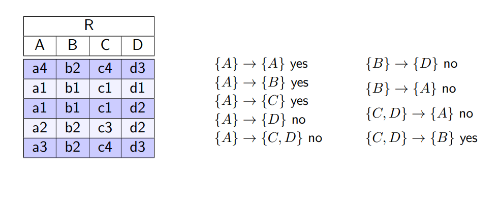
Functional dependencies are semantic constraints that need to be true for all possible instances, not just for the current one!
Keys¶
Super Keys¶
\alpha \subseteq \schema is a super key if \alpha \to \schema, i.e. \alpha determines all attribute values
- The set of all attributes is a super key: \schema \to \schema
- Super keys are not necessarily minimal
Fully Functional Dependent¶
\beta is fully functionally dependent on \alpha if:
- \alpha \to \beta and
- \alpha cannot be further reduced (= left reduced), i.e.
Candidate Keys¶
\alpha\in\schema is a candidate key if \schema is fully functionally dependent on \alpha.
- One of the candidate keys is chosen as primary key
Deriving Functional Dependencies¶
Given a set of FDs (Functional dependencies) F we can derive additional FDs
- F^+ contains all FDs that can be derived from F, i.e., all FDs logically implied by dependencies in F
- F^+ is F's closure
- Inference rules (Armstrong Axioms) help computing F^+
Armstrong Axioms¶
\alpha, \beta, \gamma, \delta are subsets of attributes in \schema
Reflexivity
If \beta \subseteq \alpha then \alpha \to \beta in particular: \alpha \to \alpha
Augmentation
If \alpha \to \beta then \alpha \gamma \to \alpha\gamma
Transitivity
If \alpha \to \beta and \beta \to \gamma then \alpha \to \gamma
The Armstrong axioms are sound and complete.
- They are sound in the sense that they generate only correct functional dependencies
- They are complete in the sense that they generate all possible FDs (F^+) from a given set F
Additional Rules¶
Not essential, but sound and ease the derivation process
Union
If \alpha\to\beta and \alpha\to\gamma then \alpha\to\beta\gamma
Decomposition
If \alpha\to\beta\gamma then \alpha\to\beta and \alpha\to\gamma
Pseudotransitivity
If \alpha\to\beta and \gamma\beta\to\delta then \alpha\gamma\to\delta
Examples¶
Given the following functional dependencies F, derive additional ones by applying the Armstrong axioms
- A → BC
- CD → E
- B → D
- E → A
Derived FDs
- E → A and A → BC, then E → BC (transitivity)
- B → D, then CB → CD (augmentation)
- CB → CD and CD → E, then CB → E (transitivity)
Closure of a Set of Attributes¶
The closure of a set of attributes (\alpha^+) with respect to a set of FDs F and a set of attributes \alpha is
Observation:
- If \alpha\to \beta is in F^+ then \beta is in \alpha^+
Attribute Closure Algorithm¶
Input:
- a set F of FDs
- a set of attributes \alpha \in \schema
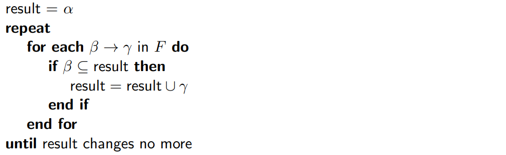
Applications:
- Test if a functional dependency \alpha \to \beta holds
- Test if a given set of attributes \kappa \subseteq \schema is a super key
- Test for super keys
- By calling attrClosure(F, \kappa) we obtain \kappa^+
- if \kappa^+ = \schema then \kappa is a super key of \schema
- By calling attrClosure(F, \kappa) we obtain \kappa^+
Canonical Cover (Minimal Cover)¶
- Two sets of FDs F and G are considered equivalent F \equiv G if their closures are the same i.e. F^+ = G^+
- Both sets allow for deriving the same set of FDs
Observation
- F^+ can be huge
- Many redundant dependencies
- Difficult to overview
Goal:
- Find the smallest possible set F_c for F so that F^+_c \equiv F^+
- There might be alternative minimal sets!
A minimal cover F_c is a canonical representation of a set F of functional dependencies
Characteristics:
-
F_c \equiv F therefore F_c^+ = F^+ (equivalent if closures are the same)
-
FDs \alpha \to \beta in F_c do not contain extraneous attributes, i.e.:
- \forall A \in \alpha:(F_c - \{\alpha \to \beta\})\cup \{(\alpha - A) \to \beta\} \not\equiv F_c
- \forall B \in \beta:(F_c - \{\alpha \to \beta\})\cup \{\alpha - (\beta - B)\} \not\equiv F_c
-
The left side of an FD in F_c is unique.
Applying the union rule \alpha \to \beta and \alpha \to \gamma can be combined to \alpha\to\beta\gamma
Check if Attribute is extraneous
- Check if A ∈ α is an extraneous attribute in α → β by computing the attribute closure:
- A ∈ α is extraneous if β ⊆ attrClosure(F, α − A)
- Check if B ∈ β is an extraneous attribute in α → β by computing the attribute closure:
- B ∈ β is extraneous if
- B ∈ attrClosure((F − {α → β}) ∪ {α → (β − B)}, α)
- B ∈ β is extraneous if
Minimal Cover Algorithm¶
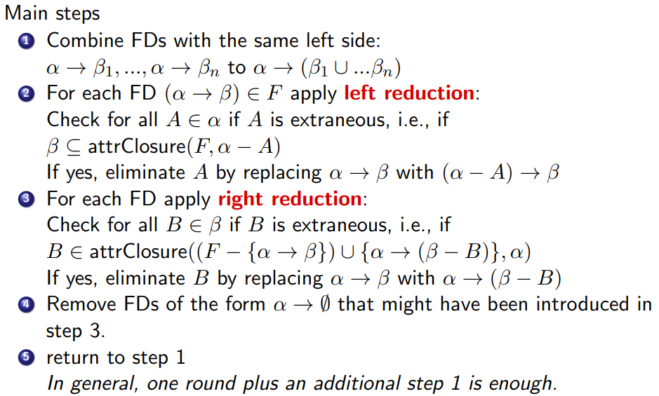
Normalization by Decomposition of Relations¶
Normalization by decomposition¶
Decompose a relation schema \schema into multiple relational schemas \schema_1,\dots\schema_n to eliminate problems in the original design
Normal forms
- Normal forms describe the quality of a design
- 1NF, 2NF, 3NF, BCNF, 4NF, \dots
- Prohibit particular functional dependencies in a relation to avoid redundancy, null values, and anomalies
Good ER modeling typically directly leads to 3NF (or higher NF) relations
Normalization eliminates problems caused by functional dependencies among attributes of any entity type
Valid and Lossless Decompositions¶
A decomposition is valid if \schema = \schema_1 \cup \schema_2, i.e. no attributes in \schema get lost
- R_1 := \pi_{\schema_1}(R)
- R_2 := \pi_{\schema_2}(R)
A decomposition of \schema into \schema_1 and \schema_2 is lossless if the following holds for all possible instances R of \schema (also referred to as lossless-join decomposition):
All data contained in the original instance R of schema \schema must be reconstructible with a natural join from the instances R_1,\dots,R_n of the new schemas \schema_1,\dots,\schema_n
Formal Characterization of a Lossless Decomposition¶
Given
- A decomposition of \schema into \schema_1 and \schema_2
- F_\schema is the set of FDs in \schema
A decomposition is lossless if we can derive at least one of the following FDs:
- (\schema_1 \cap \schema_2) \to \schema_1 \in F_\schema^+ i.e., common attributes are super key in \schema_1 or
- (\schema_1 \cap \schema_2) \to \schema_2 \in F_\schema^+ i.e., common attributes are super key in \schema_2
If this is not the case, the decomposition is said to be lossy
Example of a LOSSY Decomposition¶
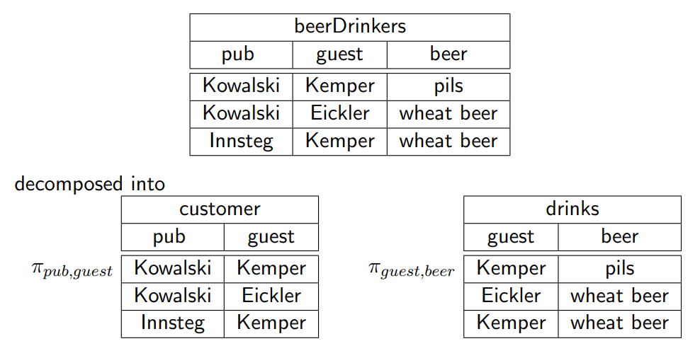
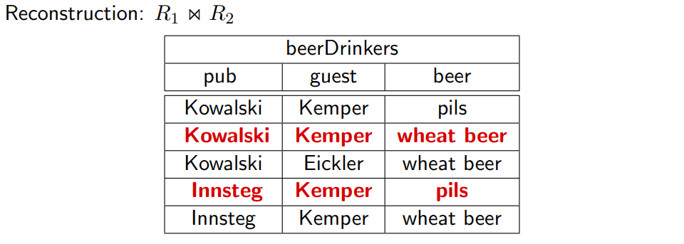
The relationship between guest, pub, and beer got lost.
Lossy decomposition sometimes means that the reconstruction leads to additional tuples.
Dependency Preservation¶
Second characteristic of a good decomposition
All functional dependencies that hold for \schema must be verifiable in the new schemas \schema_1,\dots,\schema_n
- We can check all dependencies locally on \oneton{\schema}
- We avoid the alternative: computing the join \onetonop{\schema}{\Join} to test if an FD is violated
A decomposition is dependency preserving if $$ F_{\schema} \equiv (F_{\schema_1} \cup \cdots \cup F_{\schema_n}) $$ i.e. $F^+\schema = (F{\schema_1} \cup \cdots \cup F_{\schema_n})^+ $ with F_{\schema_i} representing functional dependencies that can be checked efficiently on R_i
Example
The following is dependency preserving, since we can check all FDs locally (A\to B on R_1 and B\to C on R_2)
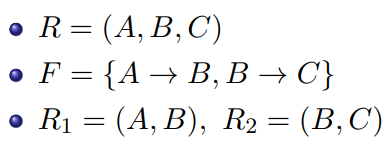
The next one is not dependency preserving, since we cannot check B\to C on any of the new relations!
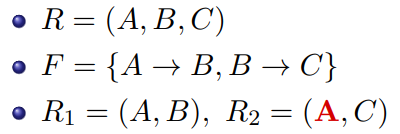
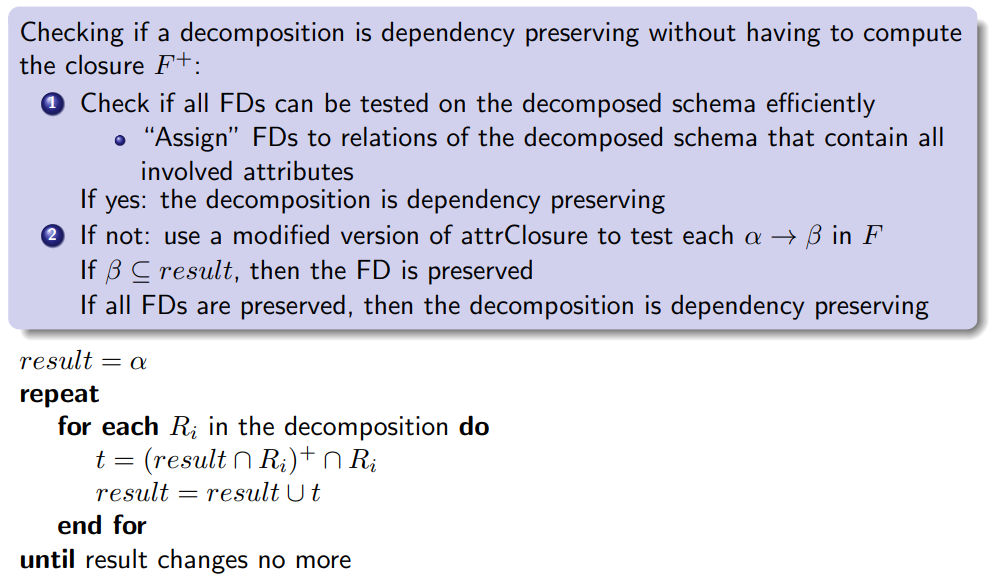
Summary Functional Dependencies¶
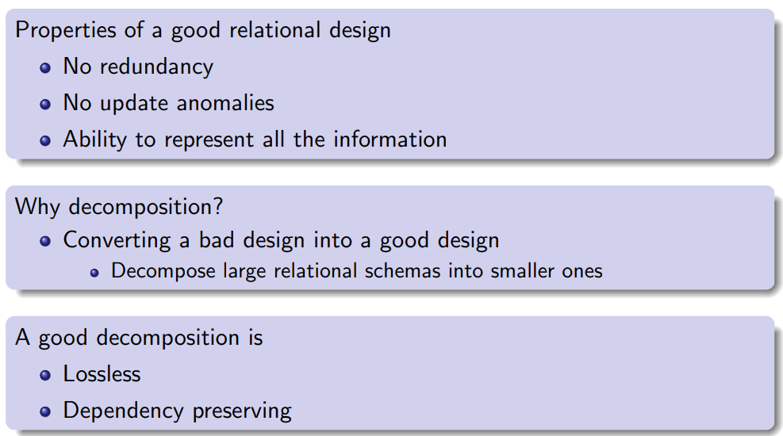
Normal Forms¶
Normal forms
- define characteristics of relational schemas
- forbid certain combinations of FDs in a relation
- avoid redundancies and anomalies
- guideline to obtain good decompositions
First Normal Form 1NF¶
A relation \schema is in 1NF if the domains of all its attributes are atomic (no composite or set-valued domains)
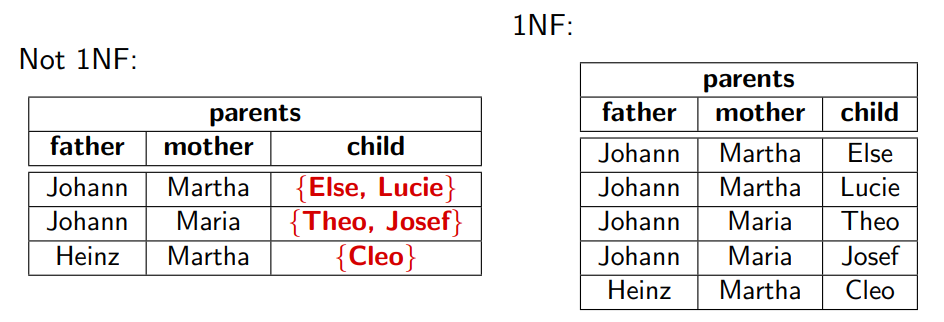
Third Normal Form 3NF¶
A relation schema \schema is in 3NF if at least one of the following conditions holds for each of its FDs \alpha \to B with B \in \schema
- B \in \alpha, i.e. the FD is trivial
- \alpha is a super key of R
- B is part of a candidate key for \schema
Main characteristics
- 3NF prevents (some) transitive dependencies
- Exception: Condition 3
Non-Example¶
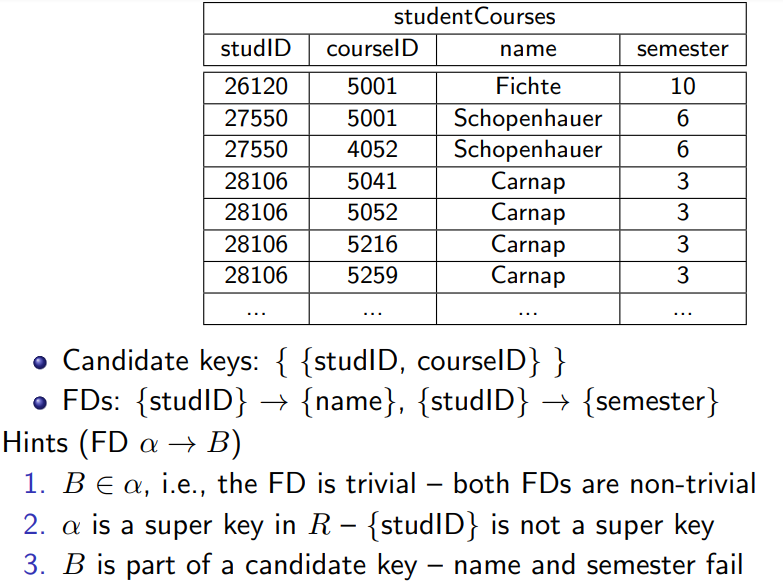
The relation is not in 3NF
Eliminates Transitive Dependencies¶
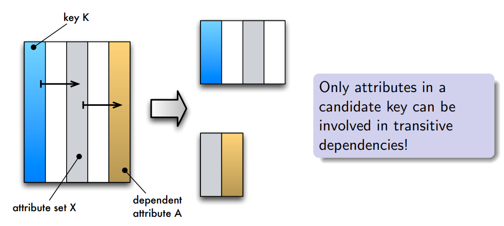
Boyce Codd Normal Form BCNF¶
A relation schema \schema is in BCNF if at least one of the following conditions holds for each of its FDs \alpha \to B with B \in \schema
- B \in \alpha, i.e. the FD is trivial
- \alpha is a super key of R
Main characteristics
- Difference to 3NF: no third option (B is part of a candidate key for \schema)
- BCNF is more strict than 3NF (“includes” 3NF)
- BCNF prevents all transitive dependencies
Example¶
3NF vs. BCNF
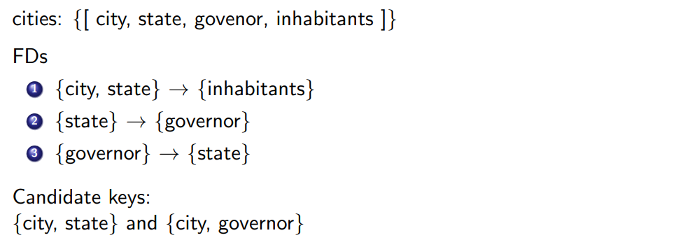
Is the relation in 3NF?
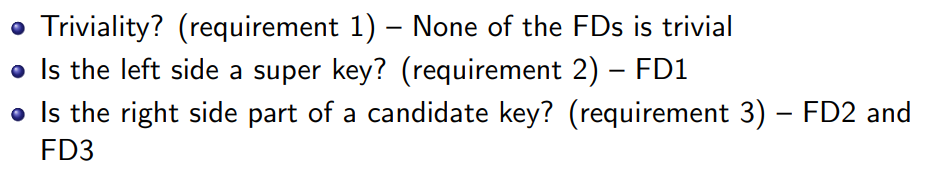
YES
Is the relation in BCNF?
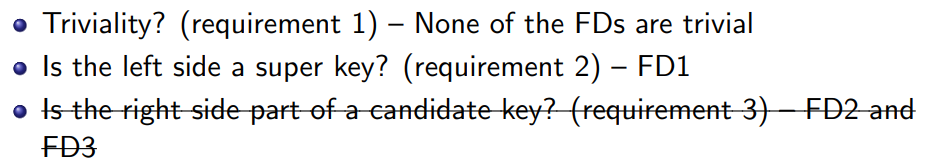
NO
Decomposition¶
It is always possible to decompose a relational schema \schema with FDs F into
- 3NF relational schemas \oneton{\schema} so that the decomposition is
- lossless
- dependency preserving
- BCNF relational schema \oneton{\schema} so that the decomposition is
- lossless
It is not always possible to create a BCNF decomposition \oneton{\schema} of \schema that is dependency preserving
Decomposition Algorithm for BCNF¶
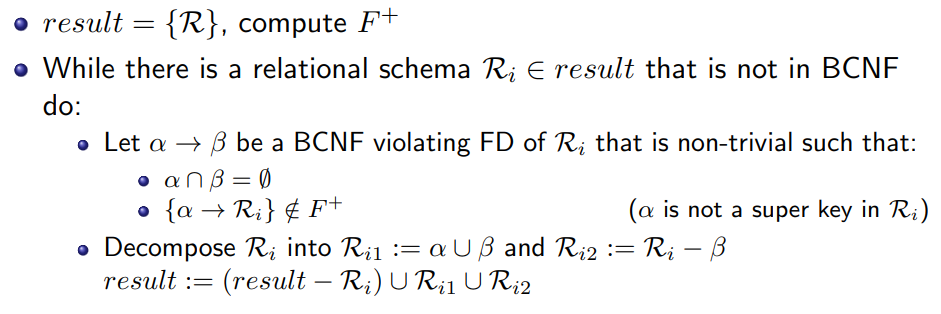
Instead of computing F^+ to check \alpha for its super key characteristics, we can compute \alpha^+ for this purpose
Summary¶
| Normal Form | Main Characteristics |
|---|---|
| 1NF | Only atomic attributes |
| 3NF | Some transitive dependencies |
| BCNF | No transitive dependencies |
In practice, if a BCNF composition is impossible without loosing dependency preservation, we go for the 3NF decomposition (although it allows for some redundancy)
Decomp. algorithms for all normal forms guarantee lossless decompositions.
Dependency preservation can only be guaranteed until 3NF.
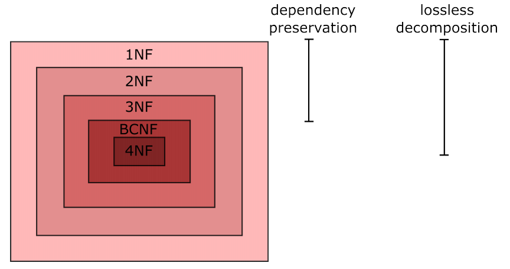